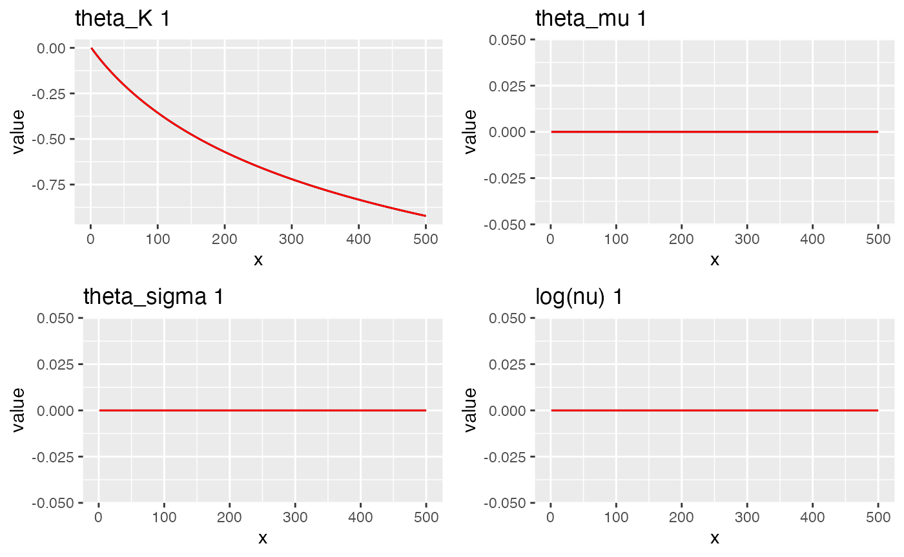
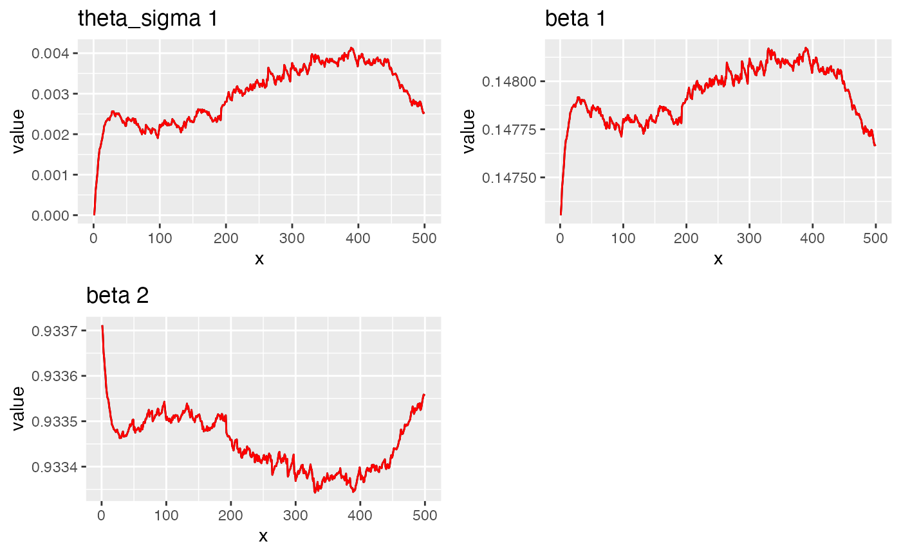

Random effects model in Ngme2
random-effect.RmdIntroduction
In Ngme2, we can specify the random effect models. The syntax is
similar to other models, using f() function.
library(INLA)
#> Loading required package: Matrix
#> Loading required package: sp
#> The legacy packages maptools, rgdal, and rgeos, underpinning the sp package,
#> which was just loaded, will retire in October 2023.
#> Please refer to R-spatial evolution reports for details, especially
#> https://r-spatial.org/r/2023/05/15/evolution4.html.
#> It may be desirable to make the sf package available;
#> package maintainers should consider adding sf to Suggests:.
#> The sp package is now running under evolution status 2
#> (status 2 uses the sf package in place of rgdal)
#> This is INLA_23.06.29 built 2023-06-30 04:37:06 UTC.
#> - See www.r-inla.org/contact-us for how to get help.
library(ngme2)
#> This is ngme2 of version 0.5.0
#> - See our homepage: https://davidbolin.github.io/ngme2 for more details.
#>
#> Attaching package: 'ngme2'
#> The following object is masked from 'package:INLA':
#>
#> fHere is a simple example of using f
# repl indicates the replicate number (the random effect is for each replicate)
repl <- c(1, 1, 2, 2, 3, 3, 3)
# random effect model accepts formula argument, as the design matrix
f(~1 + x, model = "re", replicate=repl, noise = noise_normal(),
# ignore the last part, not needed when using f() in ngme function
data = data.frame(x = 1:7), eval=TRUE)
#> Model type: Random effect
#> Cov matrix:
#> [,1] [,2]
#> [1,] 1 0
#> [2,] 0 1
#> Noise type: NORMAL
#> Noise parameters:
#> sigma = 1Simulation
The random effect model is commonly used when we have observations from different groups (or replciates).
In the following example, we have 100 groups, each group has 20 observations. The random effect is from a bivariate normal distribution with covariance matrix Sigma.
Sigma <- matrix(c(20, 10, 10, 30), 2, 2)
group <- 100
U <- MASS::mvrnorm(group, mu=c(0,0), Sigma=Sigma)
each_obs <- 20
repl <- rep(1:group, each=each_obs)
z1 <- rnorm(group * each_obs, 0, 1)
AA <- cbind(1, z1); t(AA) %*% AA
#> z1
#> 2000.000000 -3.880394
#> z1 -3.880394 1964.764952
x1 <- rexp(group * each_obs)
x2 <- rep(1, (group * each_obs))
# simulate observations
Y <- double(group * each_obs)
for (i in 1:group) {
group_idx <- ((i-1)*each_obs+1):(i*each_obs)
Y[group_idx] <-
x2[group_idx] * 3 - 2 * x1[group_idx] + # fixed effects
U[i, 1] + z1[group_idx] * U[i, 2] + # random effects
rnorm(each_obs)
}First we fit the model using lme4 package, next we fit the model using ngme2.
# fit with lme4
library(lme4)
lmer(Y ~ 0 + x2+ x1 + (z1 | repl),
data=data.frame(Y=Y, x1=x1, z1=z1, repl=repl))
#> Linear mixed model fit by REML ['lmerMod']
#> Formula: Y ~ 0 + x2 + x1 + (z1 | repl)
#> Data: data.frame(Y = Y, x1 = x1, z1 = z1, repl = repl)
#> REML criterion at convergence: 6942.753
#> Random effects:
#> Groups Name Std.Dev. Corr
#> repl (Intercept) 4.789
#> z1 5.651 0.34
#> Residual 1.008
#> Number of obs: 2000, groups: repl, 100
#> Fixed Effects:
#> x2 x1
#> 3.603 -1.961
out <- ngme(
formula = Y ~ 0 + x2 + x1 +
f(~1+z1, model="re", noise=noise_normal(),
control=control_f(numer_grad = T)
),
replicate=repl,
data=data.frame(x1=x1, z1=z1, repl=repl),
control_ngme = control_ngme(
# beta = c(0, 0)
),
control_opt = control_opt(
iterations = 500,
n_parallel_chain = 4,
std_lim = 0.01,
print_check_info = FALSE,
seed = 3
)
)
#> Starting estimation...
#>
#> Posterior sampling done!
# check the result
out
#> *** Ngme object ***
#>
#> Fixed effects:
#> x2 x1
#> 3.86 -1.94
#>
#> Models:
#> $effect1
#> Model type: Random effect
#> Cov matrix:
#> [,1] [,2]
#> [1,] 9.405507 4.188224
#> [2,] 4.188224 13.413987
#> Noise type: NORMAL
#> Noise parameters:
#> sigma = 1
#>
#> Measurement noise:
#> Noise type: NORMAL
#> Noise parameters:
#> sigma = 1.02
#>
#>
#> Number of replicates is 100
traceplot(out, "effect1")
Non-Gaussian case
The random effect model can be used for non-Gaussian case as well.
# simulate Y
group <- 500; mu = -5; nu = 1;
Sigma <- matrix(c(4), 1, 1)
V <- rig(group, nu, nu)
U <- double(group)
mean <- mu * (V-1)
for (i in 1:group) {
U[i] = MASS::mvrnorm(1, mu=mean[[i]], Sigma = V[[i]] * Sigma)
}
mean(U)
#> [1] -0.04045141
var(U)
#> [1] 32.78261
# another way to simulate
each_obs <- 10
repl <- rep(1:group, each=each_obs)
z1 <- rnorm(group * each_obs, 0, 1)
AA <- cbind(1, z1); t(AA) %*% AA
#> z1
#> 5000.000 102.759
#> z1 102.759 4997.942
x1 <- rexp(group * each_obs)
# simulate Y
Y <- double(group * each_obs)
for (i in 1:group) {
group_idx <- ((i-1)*each_obs+1):(i*each_obs)
Y[group_idx] <-
0 + x1[group_idx] + # fixed effects
U[i]*z1[group_idx] + # random effects
rnorm(each_obs)
}
out <- ngme(
formula = Y ~ 1 + x1 +
f(~0+z1, model="re", effect_type=noise_nig(
# nu = 1, fix_nu = T,
# V = V, fix_V = T
),
# W = U, fix_W = TRUE,
# fix_theta_K = T,
),
replicate=repl,
data=data.frame(Y=Y, x1=x1, z1=z1, repl=repl),
control_ngme = control_ngme(
n_gibbs_samples = 5
# beta = c(0, 0)
),
control_opt = control_opt(
estimation = T,
iterations = 500,
n_parallel_chain = 4,
stepsize = 1
)
)
#> Starting estimation...
#>
#> Posterior sampling done!
str(out$replicates[[1]]$latent[[1]])
#> NULL
traceplot(out, "effect1")
traceplot(out)
out
#> *** Ngme object ***
#>
#> Fixed effects:
#> (Intercept) x1
#> -0.0127 0.9651
#>
#> Models:
#> $effect1
#> Model type: Random effect
#> Cov matrix:
#> [,1]
#> [1,] 6.334688
#> Noise type: NORMAL
#> Noise parameters:
#> sigma = 1
#>
#> Measurement noise:
#> Noise type: NORMAL
#> Noise parameters:
#> sigma = 1.01
#>
#>
#> Number of replicates is 500(correlated nig noise)
# simulate random effects
group <- 500; mu = -5; nu = 1;
Sigma <- matrix(c(20, 5, 5, 10), 2, 2)
V <- rig(group, nu, nu)
K = t(chol(solve(Sigma))); K
U <- matrix(group * 2, nrow=group, ncol=2)
mean <- mu * (V-1)
for (i in 1:group) {
U[i, ] = MASS::mvrnorm(1, mu=rep(mean[[i]],2), Sigma = V[[i]] * Sigma)
}
colMeans(U)
cov(U)
# -----
# simulate random effects
group <- 500;mu = -5; nu = 2;sigma=1
Sigma <- matrix(c(20, 5, 5, 10), 2, 2)
K = t(chol(solve(Sigma))); K
theta_K = c(log(diag(K)), K[2,1])
# K <- diag(2) ;
V <- rig(group, nu, nu)
U <- matrix(group * 2, nrow=group, ncol=2)
for (i in 1:group) {
eps <- (-mu + mu*V[i]) * rep(1, 2) + sigma * sqrt(V[i]) * rnorm(2)
U[i, ] <- as.numeric(solve(K, eps))
}
colMeans(U)
cov(U)
# simulate Y
each_obs <- 10
repl <- rep(1:group, each=each_obs)
z1 <- rnorm(group * each_obs, 0, 1)
AA <- cbind(1, z1); t(AA) %*% AA
x1 <- rexp(group * each_obs)
# simulate Y
Y <- double(group * each_obs)
for (i in 1:group) {
group_idx <- ((i-1)*each_obs+1):(i*each_obs)
Y[group_idx] <-
0 + x1[group_idx] + # fixed effects
U[i, 1] + z1[group_idx] * U[i, 2] + # random effects
rnorm(each_obs)
}
library(ngme)
ngme::ngme(
fixed = Y ~ 0 + x1,
random = ~ z1 | repl,
data=data.frame(Y=Y, x1=x1, z1=z1, repl=repl),
reffects = "NIG",
error = "Normal"
)
# ngme2
out_corr_nig <- ngme2::ngme(
formula = Y ~ 0 + x1 +
f(~1+z1, model="re", effect_type=noise_nig(
# nu=1, fix_nu=T,
# V=V, fix_V = TRUE,
# fix_theta_mu = TRUE, mu = -5,
control=control_f(numer_grad = F)
),
# fix_theta_K = T, theta_K = theta_K,
# W = t(U), fix_W = T,
replicate=repl, debug=F),
data=data.frame(Y=Y, x1=x1, z1=z1, repl=repl),
control_ngme = control_ngme(
# beta = c(0, 0)
n_gibbs_samples = 5
),
control_opt = control_opt(
estimation = T,
iterations = 50,
n_parallel_chain = 6,
stepsize = 0.1,
verbose = T
)
)
traceplot(out_corr_nig, "effect1")
out_corr_nig
traceplot(out_corr_nig)
V
out_corr_nig$replicate[[100]]$latent[[1]]$noise$V
str(out_corr_nig$replicate[[1]]$latent[[1]]$noise)
out_corr_nig
# convergence of fixed effects
# simulate Y = 4 x + 1 + e
x1 <- rnorm(100); x2 <- rnorm(100)
y <- 5 + 4*x1 -3*x2 + rnorm(100)
out = ngme(
y ~ 1+x1 + x2,
data = data.frame(y=y, x1=x1, x2=x2),
control_ngme = control_ngme(
beta = c(0,0, 0)
),
control_opt = control_opt(
estimation = T,
iterations = 1000,
n_parallel_chain = 4,
stepsize = 1,
trend_lim = 0.0001
)
)
out
traceplot(out)